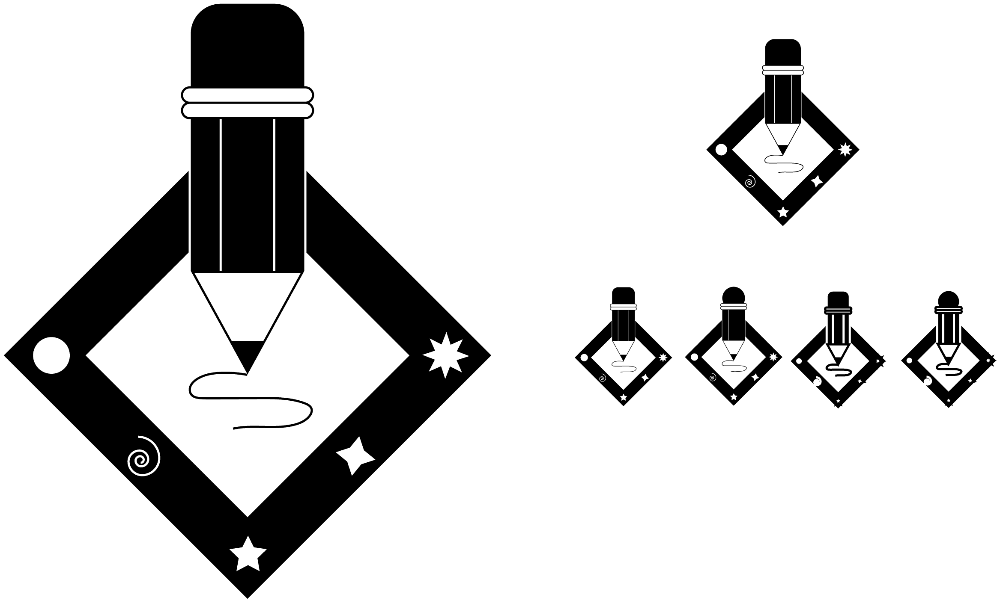
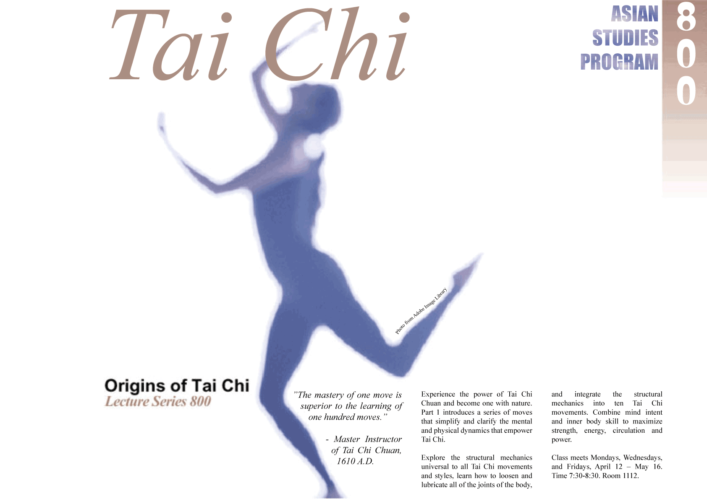
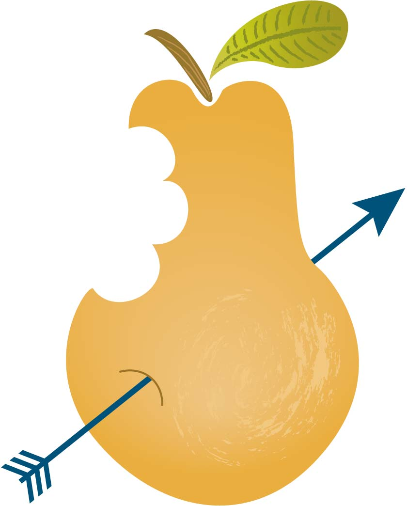

Векторна графіка - це форма комп'ютерної графіки, яка використовує геометричні об'єкти, такі як лінії, криві і полігональні форми, для створення зображень. У векторній графіці зображення описується математичними формулами, які визначають положення, розмір, колір і інші властивості об'єктів. Оскільки векторні зображення зберігають інформацію про форму об'єктів, вони можуть бути змінені без втрати якості і зберігатися в малих розмірах файлів. Векторна графіка особливо корисна для створення логотипів, іконок, графіків і дизайну з великими роздруками.

Рисунок 2.1 – результат виконання першого лесону (Logo)

Рисунок 2.2 – результат виконання другого лесону (TaiChi)

Рисунок 2.3 – результат виконання третього лесону (Pear)